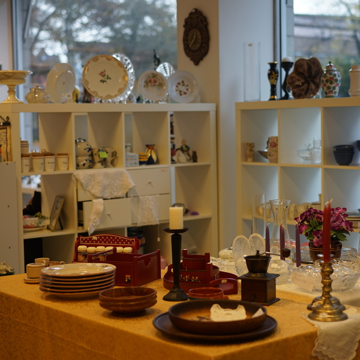
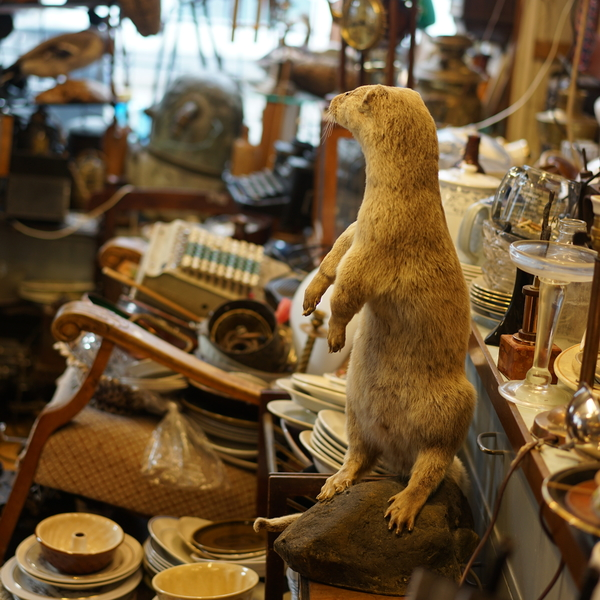

What is upcycling?
Upcycling is the practice of creating a useable product from waste or unwanted items. In addition to transforming old materials into useable objects, you can breathe a new lease of life into well used and loved items to give them a new story and personality. All this while at the same time creating something that is useful, functional and beautiful.
Recycle vs. upcycle?
Recycling is the process of taking waste, generally consumer materials – plastic, paper, metal or glass – breaking it down and turning it into a reusable product. Upcycling involves turning an unwanted product into a better-quality product. The big idea is that items made from recycled materials can be even more desirable than the original products, which can only be a good thing for sustainable production with environmental consciousness.
Clothes
There are a lot of benefits by buying second-hand clothing. You are reducing textile waste, being eco-friendly and creating a better recycling community. Bergen has a lot of second-hand stores that is dedicated to pre-owned clothes. We have picked out 3 of them based on location and popularity.
Clothes shopsHome
Buying decoration and kitchen tools can be really expensive. By buying home second-hand pieces you are saving resource and reduce waste, in addition to buying high quality stuff. Because a piece is second- hand, it has already survived the test of time. Read more about our recommended stores in Bergen that sell second-hand items with high quality.
 Home shopsCollector's items
In this fast-fashion industry, the fascination for collector’s items like antique and vintage items has exploded. These pieces has a history attached to it, rare in design and is often hard to reproduce, which is contrary to the current trend where nearly everything is mass produced and distributed to almost every country. Read more about some of the stores that sell rare items in Bergen.
 Collector's items shopsAbout us
Know about the team behind this project.
Know about us